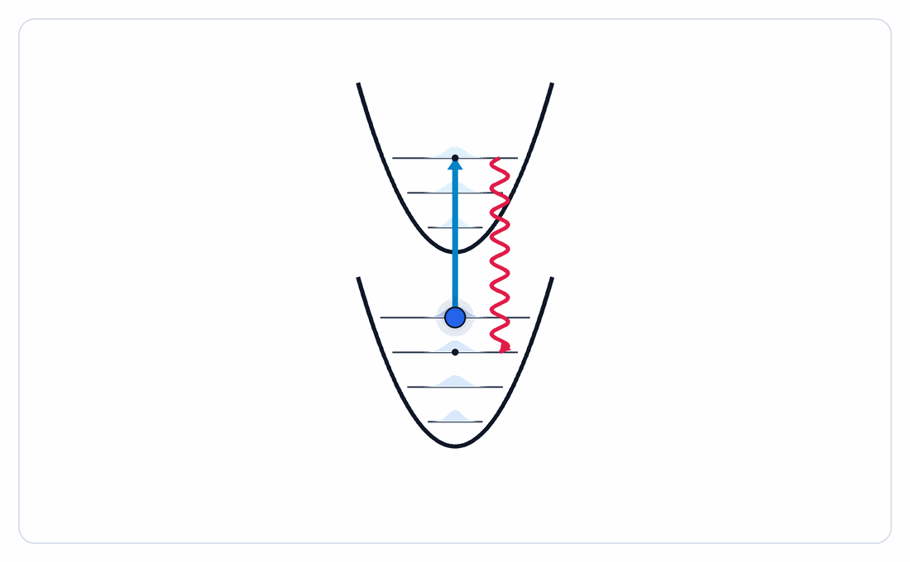
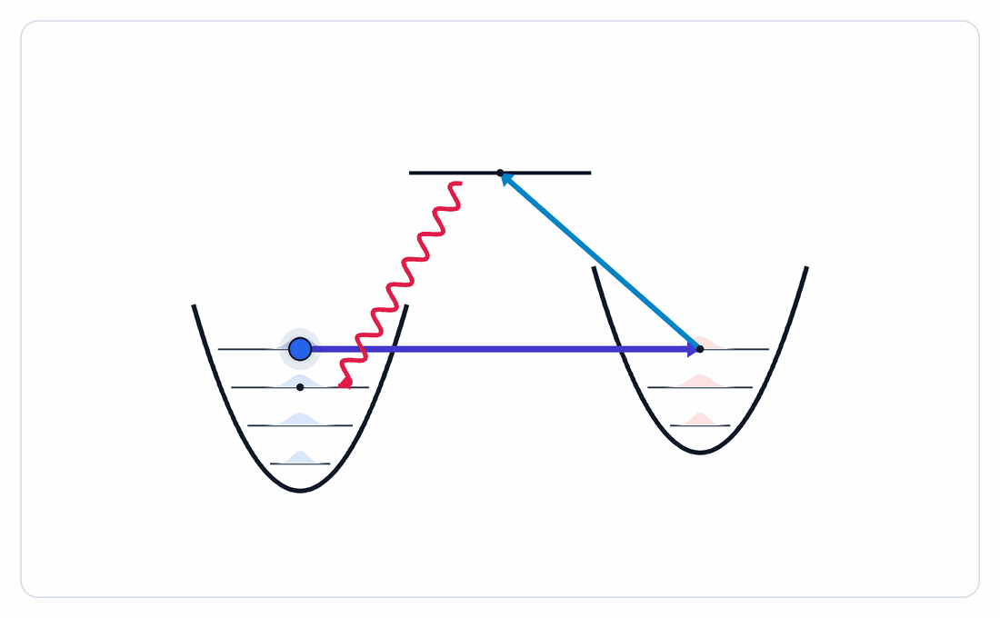

Why Cool Atoms to the Ground State?
In a neutral-atom optical tweezer experiment, a single atom sits inside a tightly focused laser beam, confined like a harmonic oscillator. The atom's thermal motion, its occupation of motional energy levels $|n\rangle$, is the primary source of decoherence and gate infidelity in quantum computing experiments. Laser cooling techniques reduce this thermal motion until the atom sits in the motional ground state $|n = 0\rangle$, where quantum coherence is maximized.
The Unified Spin Cooling Framework
All two-photon optical cooling techniques, polarization gradient (PG), gray molasses (GM), Λ-enhanced GM, EIT, and Raman sideband (RSB), share the same fundamental structure. After adiabatically eliminating the excited state and expanding to first order in the Lamb-Dicke parameter, each produces a Hamiltonian and collapse operators with a common form: a differential light shift between spin states equal to the trapping frequency (providing resonance), preferential optical pumping to the lower energy spin state (providing directionality), and coherent coupling between motional states (providing the actual cooling transition).
This unified picture is the central result of Phatak et al. (2024). It reveals three factors that determine the final temperature: (1) large pumping asymmetry $\gamma_+/\gamma_-$, (2) small Lamb-Dicke parameter $\eta$, and (3) a maximally dark lower-energy state.
The Lamb-Dicke Regime
FoundationA tightly trapped atom behaves like a quantum harmonic oscillator with discrete energy levels $|n\rangle$ separated by $\hbar\nu$, where $\nu$ is the trap frequency. The spatial extent of the ground state wavefunction is the zero-point motion $x_0$. The Lamb-Dicke parameter $\eta$ compares this motion to the photon wavelength, it is the single most important parameter in laser cooling.
Trap Hamiltonian and Motional States
The atom in the trap is described by a harmonic oscillator:
Physical Meaning of η
When $\eta \ll 1$, the atom's position uncertainty during a photon interaction is much smaller than the photon wavelength. A photon absorption is unlikely to change the motional quantum number ($\Delta n \neq 0$ transitions are suppressed by $\eta$). This suppression is what makes sideband cooling efficient: the carrier transition ($\Delta n = 0$) dominates, and the red sideband ($\Delta n = -1$, cooling) is preferred over the blue sideband ($\Delta n = +1$, heating) by the factor $\eta^2$.
Typical values: $\eta \approx 0.05$–$0.15$ for optical tweezers with $\nu \approx 50$–$200\,\text{kHz}$ and $\lambda \approx 780\,\text{nm}$.
🧮 Lamb-Dicke Parameter Calculator
Resolved Sideband Cooling
Single-photonResolved sideband (RSB) cooling is the simplest route to the motional ground state, applicable when the trap frequency exceeds the photon linewidth ($\nu \gg \Gamma$). The atomic spectrum splits into a carrier (at $\omega_0$) and discrete sidebands at $\omega_0 \pm n\nu$. By tuning a laser to the red sideband at $\omega_0 - \nu$, every absorption removes one quantum of motional energy.
Cooling Cycle
Step 1: Drive the red sideband, a photon at $\omega_0 - \nu$ takes $|g, n\rangle \to |e, n-1\rangle$. Step 2: Spontaneous emission returns the atom to the ground electronic state. In the Lamb-Dicke regime, the emitted photon has equal probability of going to $|g, n-1\rangle$ (the desired path) or $|g, n\rangle$ (recoil back up). The net effect per cycle: one motional quantum removed. The state $|g, 0\rangle$ is dark (no red sideband to drive), so the population accumulates there.
Physical Mechanism
The cooling rate is set by the photon scattering rate on the red sideband: $R_- = \eta^2 \Gamma$. The heating rate from off-resonant blue sideband excitation is $R_+ \propto \eta^2 \Gamma (\Gamma/4\nu)^2$. In steady state, these balance to give $\langle n \rangle_{ss} = ({\Gamma}/{4\nu})^2$.
The formula is striking: the final temperature depends only on the ratio $\Gamma/\nu$, not on the laser intensity or the Lamb-Dicke parameter. Making the trap tighter (larger $\nu$) directly lowers the temperature floor.
🧮 Sideband Cooling Limit Calculator
Resolved = $\nu > \Gamma/2\pi$. In the resolved regime, ⟨n⟩resolved < ⟨n⟩unresolved. Doppler limit: ⟨n⟩ = Γ/(4ν) (same as unresolved SB).

Unresolved Sideband Cooling
Doppler regimeWhen $\nu \ll \Gamma$, the trap sidebands are not spectrally resolved, the photon linewidth is so broad that a single laser drives both the carrier and nearby sidebands simultaneously. This is the regime most atoms find themselves in after a MOT. Standard Doppler cooling operates here, and the cooling limit is set by competition between the viscous force (cooling) and random recoil kicks (heating).
The Unresolved Sideband Limit
When the sidebands overlap, the atom cannot distinguish cooling transitions from carrier transitions. The steady-state occupation from Eq. 39 of Phatak et al. is:
The Doppler Temperature
The Doppler limit arises from the competition between two processes: the laser's viscous force damps atomic momentum (cooling), while random recoil from spontaneous emission heats the atom. At the optimal detuning $\Delta = -\Gamma/2$, the minimum achievable temperature is $T_D = \hbar\Gamma/(2k_B)$.
For $^{87}$Rb: $T_D = 146\,\mu\text{K}$. For the ground state in a 100 kHz trap, we need $T \sim \hbar\nu/k_B \approx 5\,\mu\text{K}$. Doppler cooling alone does not reach the ground state for broad-line atoms.
Crossing to Sub-Doppler
The solution is two-photon cooling, the techniques that follow. By using spin-dependent light shifts and coherent dark states, these methods surpass the Doppler limit while still using the same broad transitions. The Lamb-Dicke parameter $\eta$ then controls how efficiently the motional sidebands are addressed.
Dark-State Sideband Cooling
Standing waveA standing wave creates a spatially varying light-matter coupling. At the nodes of the standing wave, the electric field vanishes and the atom does not couple to light, it becomes "dark" to the laser. An atom cooled to a motional state whose wavefunction concentrates near the node has its scattering heavily suppressed, enabling very deep cooling.
Position-Dependent Coupling
In a standing wave, the interaction Hamiltonian contains $\sin(k\hat{x})$ or $\cos(k\hat{x})$ instead of $e^{ik\hat{x}}$. Near a node (at $\hat{x} = 0$), expanding to first order:
Enhanced Cooling at the Node
At the node, the $n \to n-1$ coupling scales as $\eta\sqrt{n}$, which goes to zero as $n \to 0$. The state $|n=0\rangle$ is therefore dark at the node, it does not scatter photons. This creates a natural dark state for cooling and allows the motional ground state population to accumulate without being further heated.
Different Trap Frequencies
When the cooling laser and the trap have different length scales (e.g., a red-detuned tweezer and a near-resonant cooling laser), the motional states seen by each can differ. The paper treats this case using a squeezing transformation, showing that an effective Lamb-Dicke parameter
applies when the cooling and trapping frequencies differ. A tighter trap ($\nu_\text{trap} > \nu_\text{cool}$) reduces $\eta_\text{eff}$, pushing the cooling limit lower.
Polarization Gradient Cooling
Sub-DopplerPolarization gradient (PG) cooling uses two counter-propagating laser beams with different polarizations to create a spatially varying light shift that depends on the atom's internal spin state. The atom's spin follows the local light polarization adiabatically, and the resulting Sisyphus mechanism extracts kinetic energy efficiently. Temperatures well below the Doppler limit are achievable.
The Sisyphus Mechanism
In the $\sigma^+$-$\sigma^-$ geometry, two beams create a standing wave. The light shift of the $m_F$ sublevels varies sinusoidally in space, and the optical pumping rate between sublevels also varies. An atom in the higher-$m_F$ state climbing a potential hill is pumped by optical pumping to the lower-$m_F$ state at the hill top, like Sisyphus rolling a boulder up forever. Each pump cycle dissipates kinetic energy equal to the light shift $U_0$.
Lin ⊥ Lin Geometry
In the lin $\perp$ lin configuration, the polarization rotates from linear to circular and back over half a wavelength. The atom's internal state follows this rotation, and energy is dissipated each time the atom climbs a light-shift hill. The cooling is more efficient than $\sigma^+$-$\sigma^-$ because the polarization gradient is steeper.
Temperature Limit
PG cooling does not have a simple closed-form temperature limit, it depends on the spin $F$, the laser intensity, and detuning. The temperature scales approximately as:
where $\Omega$ is the Rabi frequency and $\Delta$ the detuning. Lowering the laser power reduces $U_0$ and thus the temperature, but eventually the atom is not cooled fast enough and the technique breaks down. Typical results: $T \sim 1$–$10\,\mu\text{K}$ for alkalis.
Spin Cooling Model for PG
Phatak et al. show that PG cooling is captured by the same unified spin model as GM and EIT. After adiabatically eliminating the excited state, the effective ground-state dynamics has: (1) a position-independent Hamiltonian giving spin-dependent light shifts, (2) position-independent collapse operators for optical pumping, and (3) position-dependent collapse operators (recoil heating in the dark state). The ratio $\gamma_-/\gamma_+$, how asymmetric the pumping is toward the cooling spin state, controls the final temperature.
Gray Molasses Cooling
Dark statesGray molasses (GM) cooling uses transitions where coherent superpositions of ground spin states can be completely dark to the light. Unlike Sisyphus cooling where all spin states scatter, in GM the atom spends most of its time in a non-scattering dark state. Cooling occurs when the dark state becomes bright only at the turning points of the classical motion, and the atom is then pumped back to a dark state with less energy.
Dark States and the $F \to F' = F$ Transition
For a $J \to J' = J$ (or $F \to F' = F$) transition driven with blue-detuned light, coherent superpositions of ground $m_F$ states can be constructed that have zero dipole matrix element to all excited states. These are the "dark states." An atom pumped into a dark state stops scattering. The bright state (orthogonal superposition) has a positive light shift, sitting higher in energy. With blue detuning, bright states are trapped in regions of high intensity and dark states live in low-intensity regions.
The Unified Spin Model (Eq. 72)
After adiabatic elimination and expanding to first order in $\eta$, Phatak et al. derive the effective spin-cooling Hamiltonian:
Cooling Limit (Eq. 72)
The steady-state mean phonon number in the spin model is:
where $\gamma_h$ is the heating rate from the position-dependent operators, $\gamma_+$ is the pumping rate toward the dark state (cooling), and $\gamma_-$ is the residual rate back toward the bright state (limiting factor).
🧮 Gray Molasses Cooling Limit Calculator
Enter the spin model parameters to compute $\langle n\rangle_{ss}$ from Eq. 72. The ratios $\gamma_-/\gamma_+$ and $\gamma_h/\gamma_+$ characterize how asymmetric the pumping is and how much recoil heating the dark state experiences.

EIT and Λ-Enhanced Gray Molasses
Two-photon dark statesElectromagnetically induced transparency (EIT) and Λ-enhanced gray molasses (Λ-GM) improve over standard GM by using two coherent laser beams to create dark states from superpositions of different ground hyperfine manifolds. This "Λ-configuration" makes the dark state darker than a single-photon GM dark state, reducing $\gamma_-/\gamma_+$ and enabling lower temperatures.
The Λ-Configuration
Two ground states $|g_1\rangle$ and $|g_2\rangle$ (from different hyperfine levels) are each coupled to a common excited state $|e\rangle$ by laser fields $\Omega_1$ and $\Omega_2$ with detunings $\Delta_1$ and $\Delta_2$. The key is to transform to the bright/dark basis:
Why EIT/Λ-GM is Better than GM
In standard GM, the dark state is a single ground-state spin superposition that is dark only at the leading order in the coupling. In the Λ-configuration, the dark state $|g_D\rangle$ is dark to both laser fields simultaneously due to destructive interference, the contribution from $|g_1\rangle$ and $|g_2\rangle$ cancel exactly. This makes $\gamma_- \to 0$ much more effectively, directly reducing the steady-state $\langle n \rangle$.
The same spin-cooling model (Eq. 72) applies, but with significantly smaller $\gamma_-/\gamma_+$, extracted from simulations of $^{87}$Rb: $\gamma_-/\gamma_+ \approx 0.006$ for Λ-GM vs. $\gamma_-/\gamma_+ \approx 0.11$ for standard GM.
EIT Heating Resonance
When $\Delta_1 - \Delta_2 = 2\nu$ (the blue sideband two-photon condition), a heating resonance appears. The optimal cooling occurs at $\Delta_1 = \Delta_2$ when the bright-state light shift equals the trap frequency, $\Omega^2/\Delta = \nu$.
Raman Sideband Cooling
Ground state prepRaman sideband (RSB) cooling is one of the highest-fidelity routes to motional ground-state preparation for neutral atoms in tweezers. Unlike PG, GM, and EIT, which all use the same beams for both cooling and optical pumping, RSB separates these roles. Far-detuned Raman lasers drive the motional transition while a carefully designed near-resonant optical pumping beam uses angular momentum selection rules to suppress recoil heating from the dark state.
The RSB Cooling Cycle (Fig. 9)
Step 1 (Raman): Two far-detuned counter-propagating lasers at Rabi frequencies $\Omega_1$, $\Omega_2$ and detuning $\Delta$ drive the two-photon transition $|g_1, n\rangle \to |g_2, n-1\rangle$ via stimulated Raman. The Raman coupling:
Step 2 (Optical pumping):
A separate near-resonant beam pumps $|g_2\rangle \to |g_1\rangle$ via spontaneous emission. The key is that angular momentum selection rules ($\Delta m_F = 0, \pm 1$) can be exploited so that $|g_1\rangle$ remains dark to the pump beam. Spontaneous emission in the Lamb-Dicke regime keeps the atom at $n-1$ rather than $n$.
Why RSB Beats EIT/Λ-GM
In EIT and Λ-GM, the counter-propagating lasers that provide cooling also do optical pumping. This means position-dependent collapse operators act on the dark state: the atom in $|g_D\rangle$ scatters photons from the cooling beams at rate $\propto \eta^2 \gamma_h$. This heating rate is fundamental and sets the $\eta^2$ floor in Eq. 72.
In RSB, the optical pump beam is completely separate and designed to be dark to $|g_1\rangle$. The far-detuned Raman beams have negligible scattering ($\Gamma_R \propto \Omega^2/\Delta^2 \approx 0$). So the position-dependent collapse operator from pumping is absent, removing the $\eta^2\gamma_h$ floor entirely.
Comparison: PG / GM / EIT / RSB at a Glance
The progression from PG to RSB represents successive improvements in how dark the dark state is to recoil heating:
- PG: No dark state; all spin states scatter. Sisyphus mechanism provides cooling. Limit: $T \sim U_0 \sim \hbar\Omega^2/|\Delta|$.
- GM: Single-laser dark state. Position-dependent pumping heats the dark state at rate $\eta^2\gamma_h$. Limit: $\langle n\rangle \propto \eta^2\gamma_h/\gamma_+$.
- EIT/Λ-GM: Two-laser dark state via interference. $\gamma_-/\gamma_+$ reduced by $\sim 20\times$. Same $\eta^2\gamma_h$ floor from counter-propagating pump.
- RSB: Separate pump beam, dark to $|g_1\rangle$. No $\eta^2\gamma_h$ floor. Limit: technical coherence and off-resonant carrier driving.
Phase Coherence Requirement
Both RSB and Λ-GM require the two Raman lasers to maintain phase coherence. Any relative frequency noise at timescales faster than the coherence time $\tau_c$ drives unwanted bright-dark mixing. The requirement is:
For $\eta = 0.1$ and $\nu = 100\,\text{kHz}$, this requires laser coherence at the $\sim 10\,\text{kHz}$ level, readily satisfied by generating both frequencies from the same laser using an AOM or microwave EOM.
Technique Comparison
SummaryAll techniques are benchmarked for the same atom and trap. The chart and table below show theoretical $\langle n \rangle$ limits using parameters representative of $^{87}$Rb in a 100 kHz optical tweezer ($\eta \approx 0.1$). Use the calculator to explore how the limits shift for your atom and trap.
Steady-state ⟨n⟩ for different cooling techniques (η = 0.1, Rb D2)
🧮 Technique Comparison Calculator
| Technique | ⟨n⟩ limit | Regime | Beams | Dark state | Key requirement | Typical ⟨n⟩ (Rb, 100 kHz) |
|---|---|---|---|---|---|---|
| Doppler | $\Gamma / (4\nu)$ | Unresolved | 1 color | None | $\Delta = -\Gamma/2$ | ~15 |
| Resolved SB | $(\Gamma/4\nu)^2$ | Resolved $\nu \gg \Gamma$ | 1 (narrow line) | $|n=0\rangle$ dark | $\nu \gg \Gamma$ | ~0.01 (Sr/Yb) |
| Polarization Gradient | $\sim U_0 / k_B$ | Sub-Doppler | 2 (counter-prop.) | Partial | Power & detuning tuning | 2–5 |
| Gray Molasses | $s/(1-s)$, $s \approx \eta^2\gamma_h/\gamma_+$ | Sub-Doppler | 2 (counter-prop., blue det.) | Spin dark state | $F \to F' = F$ transition | 0.3–1 |
| EIT / Λ-GM | Same as GM, smaller $\gamma_-$ | Deep sub-Doppler | 2 colors, coherent | Two-photon dark state | Phase coherence; $\Delta_1 = \Delta_2$ | 0.05–0.3 |
| Raman Sideband | Technical (coherence time) | Ground state | 2 Raman + 1 pump | Separate pump (sel. rules) | Phase coherence; $\Omega_R < \nu$ | <0.05 |
Insight 1: η² Scaling
All two-photon cooling techniques have a temperature floor scaling as $\eta^2$. Tighter traps (higher $\nu$, smaller $\eta$) directly improve the final temperature. This is why modern tweezer experiments push toward 1 MHz trap frequencies.
Insight 2: Pumping Asymmetry
The ratio $\gamma_-/\gamma_+$ is the key material parameter. A large asymmetry means the atom quickly returns to the cooling spin state after each cycle. GM achieves $\gamma_-/\gamma_+ \approx 0.11$; Λ-GM achieves $\approx 0.006$; RSB achieves $\approx 0$ by design.
Insight 3: Dark State Quality
The final temperature is set by how dark the dark state is to recoil heating. Single-laser dark states (GM) have a position-dependent heating rate $\eta^2\gamma_h$. Two-laser dark states (EIT) reduce $\gamma_-$. Separate-pump RSB eliminates position-dependent heating from the optical pump entirely.
Papers, Textbooks & Videos
Go deeperThe resources below are organized by how deep you want to go, from a 10-minute video to graduate-level review articles. Start with the videos if you want intuition first, then move to the textbook chapters, then the original papers once you want to work through the math.
🎬 Videos, Build the Intuition
The clearest physical intuition for laser cooling from one of its inventors. Phillips walks through Doppler cooling, optical molasses, and sub-Doppler mechanisms with hand-drawn diagrams. The written lecture and slides are freely available on the Nobel Prize site. Essential first read.
Foundational · Nobel lectureVisual, accessible introduction to laser cooling for a general science audience. Good for building the core mental model of photon momentum kicks before diving into the physics. Derek Muller visits NIST to see real laser cooling in action.
Introductory · VisualPhillips delivers his famous public lecture on laser cooling — much more engaging than reading the Nobel text. Covers Doppler cooling, the optical molasses surprise, sub-Doppler temperatures, and BEC. Highly recommended before tackling the technical papers.
Foundational · Full lectureThe Ye Lab at JILA pioneered many sub-Doppler techniques for alkaline-earth atoms. Their research pages link to key papers on gray molasses, EIT cooling, and sideband cooling in optical lattices. Excellent for connecting the theory on this page to experiment.
Graduate level · Sub-Doppler · EIT📖 Textbooks & Free Notes
The definitive free graduate textbook for AMO physics. Chapters 9–11 cover laser cooling comprehensively: Doppler cooling, optical molasses, the Wigner-Weisskopf theory, and sub-Doppler mechanisms. Also covers the master equation formalism used by Phatak et al. The spin tensor coefficients in the paper's Appendix reference Steck directly.
Free PDF · Most recommendedThe standard review for sideband cooling of trapped ions, and the physics is identical for neutral atoms in tweezers. Covers the Lamb-Dicke regime, motional state preparation, sideband thermometry, and ground-state cooling in rigorous detail. Highly cited (5000+).
Review article · Sideband coolingThe foundational review that established the theoretical framework for laser cooling, before sub-Doppler cooling was even discovered. Covers the semiclassical and quantum treatments of radiation pressure, the Fokker-Planck approach to cooling, and the Doppler limit.
Review article · Doppler / foundationsThe original paper predicting and explaining sub-Doppler cooling via polarization gradients, the Sisyphus mechanism. Written the same year the effect was discovered experimentally. The theoretical framework here directly underlies PG and GM cooling.
Original paper · PG cooling🔬 Key Experimental Papers
The primary reference for this entire page. Derives the unified spin-cooling framework unifying PG, GM, Λ-GM, EIT, and RSB under a single formalism. All equations on this page are from here.
Theory · Unified frameworkExperimental demonstration of Λ-GM cooling in a single-atom optical tweezer, the experiment at Purdue that motivated the generalized theory paper. Shows $\langle n \rangle \approx 0.3$–$0.5$ for $^{87}$Rb using the $F=1/2, 3/2 \to F'=3/2$ Λ-configuration.
Experiment · Λ-GM · Hood LabDemonstrated gray-molasses cooling and enhanced optical-tweezer loading for potassium, showing how sub-Doppler cooling improves tweezer preparation before deeper ground-state cooling stages.
Experiment · GM in tweezersThe landmark paper demonstrating RSB cooling of a single neutral atom in a tweezer to $\langle n \rangle < 0.05$, the first ground-state preparation in a tweezer. Foundational for the neutral-atom quantum computing platform.
Experiment · RSB · LandmarkIndependent demonstration of RSB in a tweezer. Includes detailed characterization of the coherence properties and an analysis of the technical limits discussed in the theory section above.
Experiment · RSB · CoherenceFirst theoretical proposal and experimental verification of EIT cooling in trapped ions. Establishes the bright/dark basis picture and the resonance condition. Directly relevant to EIT cooling of neutral atoms in tweezers.
Experiment + Theory · EIT cooling